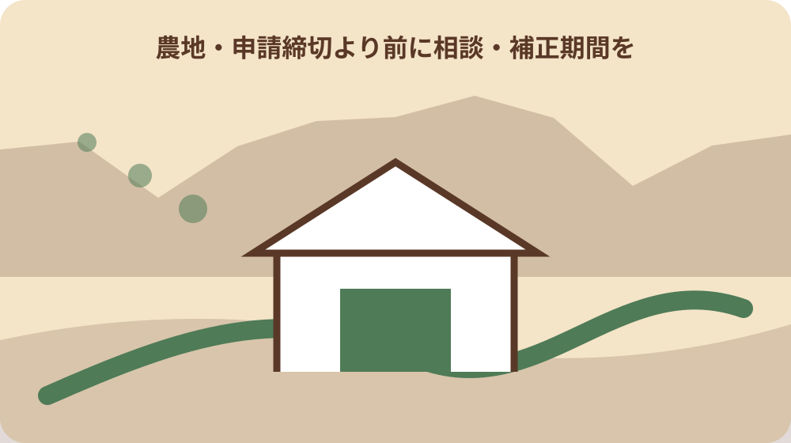

先に結論を確認する
この記事の答え：一般法人にも解除条件付き貸借による参入経路があります。ただし全部効率利用、周辺農地への支障がないこと、地域での役割、農業責任者などを満たす必要があるため、候補地と法人資料をそろえて森町農業委員会へ事前相談します。
森町で最初に照合する条件：候補地は地番・現況・進入路・水利を一筆ずつ確認し、登記地目だけで農地該当性を決めない。
契約書より先に法人農地借受判定票を作る
森町で法人が農地を借りたいとき、候補地の賃料交渉から始めると、法人の適格性や選ぶべき権利取得経路が後回しになります。本稿は借り手法人の社内担当者が、農業委員会へ相談する前に未確認事項を見える化するための判定票を提案します。
判定票の結論欄は、借りられる、借りられないの二択にしません。確認済み、資料不足、森町農業委員会へ照会、契約案の修正が必要、農地バンクへ相談、のように次の行動が分かる状態で残します。許可前の自己判定を行政判断の代わりにしないためです。
対象は耕作目的の借受けです。農地を買う法人の所有要件、所有者が売るか貸すかを比べる判断、農地を宅地や駐車場へ変える転用判断は別論点です。候補地を確保したいという同じ言葉でも、利用目的が違えば必要な条項と相談先が変わります。
この判定票は会社の稟議書とも分けます。稟議が承認済みでも農地の権利を取得できるとは限らず、農業委員会の確認前に承認を契約実行の合図にしません。版番号、作成日、確認者を付け、候補地が変わったら別票を作ります。
法人の形態と借受け責任者を一行目に置く
判定票の一行目には法人名、法人番号、本店所在地、法人形態、代表者を書きます。ただし株式会社か合同会社かだけでリース方式の可否は決まりません。農業を実行する組織、人員、資金、機械を具体的に説明できるかまで確認欄を分けます。
一般法人がリース方式で参入する場合、業務執行役員または農業部門に権限と責任を持つ重要な使用人のうち一人以上が農業に常時従事することが要件です。氏名だけでなく役職、決裁範囲、現地対応日、営農計画への関与を資料で示せるようにします。
農業への常時従事は、畑での作業時間だけを意味しません。国の説明では営農計画やマーケティング等も含まれます。一方、名義だけの担当者では足りません。地域調整や利用状況の説明に責任を持てる人物かを組織規程や代表者証明と突き合わせます。
責任者が退職・異動した場合の代替者も候補として記録します。重要な使用人を置く場合は、肩書だけでなく農業部門について何を決められるかが分かる社内規程を用意し、現地から本店へ逐一照会しないと動けない体制になっていないか点検します。
全部効率利用を面積ではなく実行計画で示す
基本要件の一つは、借りる農地の全てを効率的に利用することです。面積が小さいから自動的に満たすわけでも、大規模法人だから自動的に認められるわけでもありません。筆ごとの作物、作付時期、年間作業、機械、労働力を同じ表にします。
候補地が複数筆なら、地番、登記地目、現況、面積、所有者、進入路、水利、既存耕作者を一筆ずつ記録します。離れた筆を一括して『一団の畑』と書くと移動時間や機械搬入の難しさが隠れます。現地写真には撮影位置と方向も添えます。
営農計画には売上見込みだけでなく、耕起、播種、管理、収穫、出荷、草刈り、残渣処理を誰がいつ行うかを書きます。繁忙期に人員が足りるか、故障時に代替機を確保できるかも記録し、継続可能性を数字と担当で説明します。
作付面積に対する必要人時は、平常月と収穫期を分けます。外部委託を見込む作業は委託候補、対応区域、見積時点を記し、契約できるという未確認の想定を自社労働力として数えません。資金計画にも初年度と平年の違いを残します。
周辺農地への支障を地域の運用から点検する
法人単独の採算が成立しても、周辺の農地利用に支障を及ぼすおそれがあれば要件確認が必要です。国の案内は、地域計画の達成、面的な農地利用、水利調整、共同防除などへの影響を例示しています。判定票には周辺関係の欄を独立させます。
森町では水田、茶園、畑、山際の農地で共同作業や管理時期が異なり得ます。一般論で地域負担を決めず、候補地ごとに農道、水路、ため池、共同防除、獣害対策、草刈りの取り決めと連絡相手を確認します。私有地へ無断で入る現地確認は行いません。
確認結果は『地域活動へ参加する』だけで終わらせず、活動名、時期、頻度、費用、法人側担当、欠席時の連絡方法まで書きます。契約開始後に初めて知ると、地域にも法人にも負担が集中します。農業委員会への相談前に不明欄を示せる方が誠実です。
近隣への説明は許可を得るための形式的な挨拶にしません。散布、騒音、車両通行、土の流出など実際に影響し得る作業を示し、既存の地域運用を聞きます。聞いた内容は行政要件と地域からの要望を分けて記録します。
解除条件付き貸借の四つの出口を確認する
一般法人のリース方式では、農地を適切に利用しない場合に貸借を解除する旨の条件を契約へ書面で付す必要があります。単に『法令に従う』と書くだけで十分かを自己判断せず、契約案を森町農業委員会へ事前に示して確認します。
撤退時の混乱を減らすため、原状回復義務を誰が負うか、費用を誰が負担するか、回復されない場合の損害賠償、中途終了時の違約金という四点を判定票から契約案へ移します。施設や資材の所有者、撤去期限も筆ごとに整理します。
解除条件は貸し手だけを守る文言ではありません。法人側も、どの状態が不適切利用に当たるのか、是正期間や通知方法はどうするのかを確認できます。曖昧な出口を残したまま設備投資を決めず、許可と契約の両面を専門家にも確認します。
ハウス、井戸、ポンプ、配管、電気設備を置く計画がある場合は、貸借許可だけで設置まで認められると考えません。施設の構造、設置位置、基礎、撤去方法を図面にし、農地法上の別手続や土地改良区等への確認がないか早い段階で照会します。
農地法3条と農地バンクの経路を分ける
森町の現在の案内では、耕作目的の貸借には農地法第3条の経路が残る一方、従来の利用権設定等促進事業等は2025年3月末で終了し、2025年4月から農地バンク事業へ一本化されています。旧様式や過去の契約をそのまま新規案件へ流用しません。
農地法第3条では農業委員会の許可が必要で、許可を受けない貸借権設定等は無効です。判定票には申請予定日、総会予定、補正期間、許可前に開始してはいけない作業を記し、賃料支払日や播種日を先に確定しないよう管理します。
農地バンクでは静岡県農業振興公社が所有者と耕作者の間に入り、貸借契約と賃借料の徴収・支払いを担います。どちらの経路が案件に適するかは、相手方との口約束で決めず、候補地、法人資料、希望時期を持って町窓口へ相談します。
経路欄には選択理由も残します。期間、賃料管理、所有者数、地域計画との関係、開始希望時期を比較し、過去に社内で使った方法だからという理由だけで決めません。森町公式ページの更新日を確認し、古い説明資料には参考資料と表示します。
森町の地域計画と目標地図を候補地に重ねる
森町の地域計画は、農地一筆ごとの10年後の耕作者を示す目標地図により将来の利用像を明確にするものです。候補地が見つかったら、法人の希望だけで利用開始を描かず、その地域の計画と担い手の位置付けを町へ確認します。
国の案内でも、地域計画の達成に支障が生じるおそれは周辺農地利用の判断例に挙げられています。目標地図に名前がないことだけで参入不可と断定せず、随時更新の仕組みや必要な協議を農地管理係へ尋ねます。
判定票には地域計画名、確認日、対象筆、現在示される担い手、町から案内された次の手続を記録します。地図画像の切り抜きだけを保存すると更新時点が失われるため、ページ名と公表日を添え、実行直前に再確認します。
目標地図は将来像を話し合う資料であり、現況の権利関係を示す登記資料と同じではありません。地図上の表示、所有者との合意、農業委員会の手続を別欄に置き、一つが確認できただけで残る二つを確認済みにしない運用が必要です。
農業委員会相談セットを社内でそろえる
事前相談には、法人登記事項、定款、組織図、農業担当者の権限資料、営農計画、収支見込み、機械と労働力の一覧、候補地番表、位置図、現地写真、契約案を一つの索引でそろえます。正式な提出書類は森町の最新一覧を優先します。
相談票には質問を具体的に書きます。『当社は借りられますか』ではなく、一般法人のリース方式を想定していること、候補筆、作物、開始希望時期、責任者、地域活動への対応、検討中の権利取得経路を示し、足りない資料を尋ねます。
森町公式は第3条申請を期日までに農業委員会事務局へ提出し、毎月の総会で審議すると案内しています。締切当日に初めて持参せず、相談日、補正期限、総会予定、結果通知後の契約実行という時間軸を社内稟議へ反映します。
提出物の控えは、提出した状態をPDF化し、差替え前後を残します。補正の電話を受けたら、対象書類、修正理由、提出期限、再提出方法を復唱し、口頭だけで本文を書き換えません。申請書と契約案で地番や面積が一致するかも最後に照合します。
良い点は要件を満たす運営体制とセットで考える
リース方式は、農地所有適格法人でない一般法人にも農業参入の道を開きます。土地購入を先行させず営農へ資金を振り向けられる点は利点になり得ますが、解除条件、地域での役割、責任者、効率利用という要件を継続して満たす運営体制が前提です。
農地バンク経路は公社が間に入り、貸借契約や賃借料の徴収・支払いを担うため、当事者だけでの管理を減らせる面があります。ただし候補地が必ず借りられる仕組みではありません。法人適格性と地域計画、土地条件を別々に確認します。
森町で農地がまとまれば、移動や作業の効率化を検討できます。一方、まとまった候補地を求めるほど既存の担い手、水利、農道利用との調整は重要になります。面積の確保を成果にせず、継続的に耕作できる筆だけを計画へ入れます。
借受けの利点を社内へ説明するときも、許可取得を成功の終点にしません。初年度の作付、地域作業、収穫、賃料支払、年度後の報告まで終えて初めて一巡します。担当部署の予算には、申請後の管理と原状回復に備える費用も含めます。

契約前に残す四つの森町条件
第一の条件は地番ごとの現況です。登記地目が原野でも現況が農地なら農地法の対象になり得るため、登記事項だけで除外しません。逆に地図上で畑に見えても、現地判断を法人が確定せず、農業委員会へ照会します。
第二は水と進入です。取水時期、共同水路、農道幅、橋の耐荷重、機械の旋回場所を現地で見ます。第三は地域の役割で、共同作業、費用、連絡網を確認します。第四は地域計画との関係で、目標地図と候補筆の位置付けを確認します。
四条件の一つでも不明なら、賃料が安いことを理由に契約を急ぎません。不明は欠点ではなく、次の照会事項です。所有者の説明、法人の現地記録、森町の回答を同じ欄へ混ぜず、誰がいつ述べた情報かを分けます。
四条件は季節を変えて再確認する項目もあります。乾いた日の進入だけで排水を判断せず、水利は取水期の運用を聞きます。写真に写らない境界標や埋設管は所有者の記憶だけで確定せず、資料と関係者の確認へつなげます。
大石の視点：賃料より先に撤退時まで描く
私は小さな不動産業者として、法人の農地借受けでは賃料の安さより、道路、境界、水路、現況、地域の取り決めを先に見ます。農地は契約書の面積だけでは運用できず、毎日の進入と周囲との関係が営農継続を左右するからです。
契約前に撤退場面を書くことは後ろ向きではありません。設備、土壌改良、資材、残作物を誰がどう戻すかが決まれば、貸し手と借り手の双方が投資判断をしやすくなります。行政の許可判断と民事契約の助言は分け、必要に応じ専門家へつなぎます。
実家カルテは本来家族の土地情報を整理する道具ですが、法人案件でも地番、名義、境界、道路、農地、連絡先を一枚にする考え方は使えます。ただし所有者側の売る・貸す結論へ誘導せず、法人の借受要件と相談記録を別紙にします。
私は、所有者の困りごとを聞くことと、法人が借受要件を満たすことを同じ交渉にしない方がよいと考えます。草刈り負担を早く減らしたい事情があっても、許可前利用を正当化できません。双方の予定を分け、待つ期間の管理者も決めます。
判定票を更新記録として閉じる
判定票の最後には、法人要件、全部効率利用、周辺支障、解除条件、責任者、地域での役割、権利取得経路、地域計画、提出資料、相談履歴、許可後報告、再確認日を並べます。十二欄すべてに根拠資料か次の担当を付けます。
許可を受けた法人は、事業年度終了後3か月以内に農業委員会へ利用状況を報告する必要があります。借受け時だけのチェックリストにせず、事業年度末、契約更新前、責任者変更時、作付変更時に見直す管理票として保管します。
今日できる一歩は、候補地の地番を一つ決め、法人登記事項と農業責任者、営農計画、希望経路の四欄を埋めて森町農林担当へ事前相談日を取ることです。許可前に耕作や契約実行へ進まず、回答日と担当、追加資料を残して次の判断へ進みます。
完成した判定票は代表者、農業責任者、契約担当の三者で読み合わせます。誰か一人でも根拠を説明できない欄は再確認へ戻し、公式ページのURLと確認日を更新します。最終判断時には、候補筆と契約案が相談時から変わっていないことも確かめます。